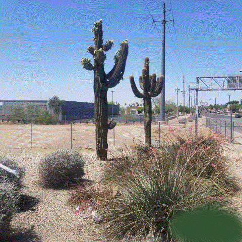
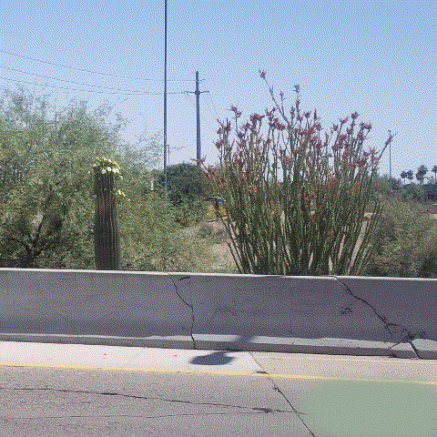
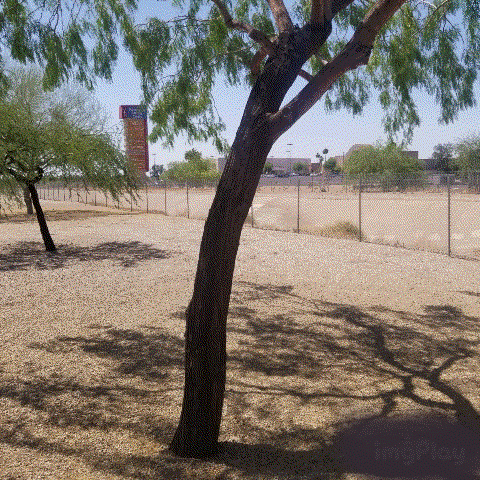
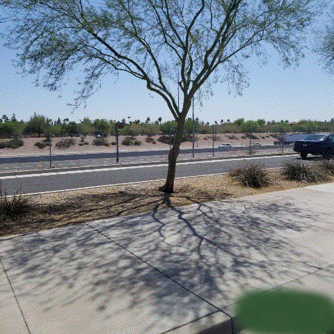
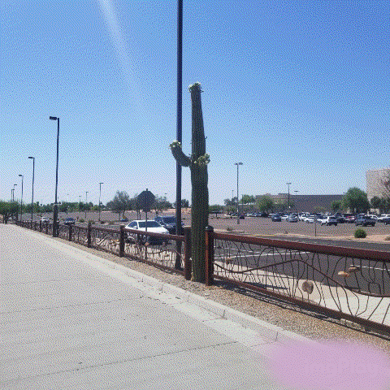

Here it is early May, and the Saguaro are blossoming (about 25 percent through the bloom cycle).
The photos are taken from so far away, that it's not really doing said blossoms justice.
The Mesquite were in full bloom about thirty days back (early April).
I had to do something of a touch up to the photos to get rid of a corporate logo that kept showing up.
Not so much of a touchup, and more of a hack job.

Another blossoming Saguaro, and an Ocotillo.
Saguaro blossoms more noticeable, if only slightly so.
Truly don't know when an Ocotillo blooms.

Mesquite tree -- again, too far away,
Very very rough bark on a Mesquite (especially in the much older trees).
Corporate Logo bleed through here, hack job not complete enough.

This Photo depicts a Palo Verde Tree.
I believe the Palo Verde and the Mesquite are related.
Bark here much smoother than the Mesquite (But as before photo from too far away
Can't even tell the variability of the roughness).

Another Saguaro
These Photos taken at a Park and Ride which the residents use for commuter savings.